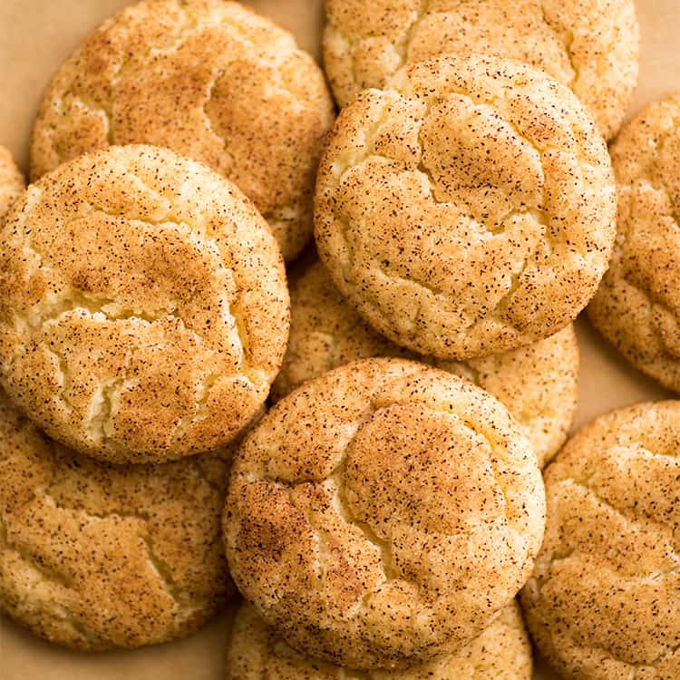

snickerdoodles

delicious little snickers for your life!
these snickerdoodles will rock your world. trust me. when i was a mere lad, snickerdoodles were the one thing standing between me and murder! read on to find out the secrets to snickerdoodle heaven...
ingredients
- 4 tsp lemon juice
- 1 tsp baking soda
- 3/4 tsp salt
- 2 sticks of softened unsalted butter (1 cup)
- 1 3/4 cups granulated sugar
- 2 large eggs
- 1 tbsp cinnamon
steps
- preheat the oven to 400 degrees fahrenheit and line some baking sheets with parchment paper.
- whisk the flour, lemon juice, baking soda, and salt together in a large bowl.
- cream the butter and 1 1/2 cups of the sugar until well mixed, then beat in the eggs, making sure to scrape the sides of the bowl.
- slowly whisk in the dry ingredients until well combined.
- mix the remaining 1/4 cup of sugar and cinnamon in a small, separate bowl. measure out 1.5 tbsp balls of dough and roll them in the cinnamon sugar mixture.
- place the balls on the baking sheet(s) 2.5 inches apart and bake them for 8-10 minutes (or until they're just a little golden around the edges).
back home